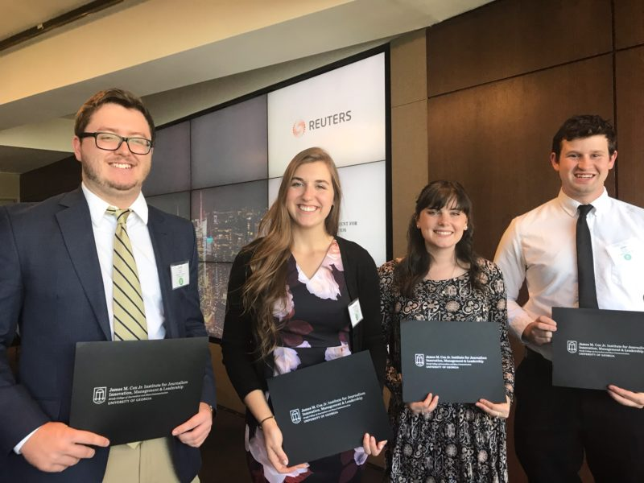

Best in Business Award
The SABEW Best in Business awards are the most prestigious set of awards honoring excellence in business journalism in the world. This contest is for SABEW members only.
Canadian members can also choose to participate in the smaller SABEW Canada Best in Business contest.
Best in Business Honorees
- 2018 SABEW Best in Business Honorees
- 2017 SABEW Best in Business Honorees
- 2016 SABEW Best in Business Honorees
- 2015 SABEW Best in Business Honorees
- 2014 SABEW Best in Business Honorees
- 2013 SABEW Best in Business Honorees
- 2012 SABEW Best in Business Honorees
- 2011 SABEW Best in Business Honorees
- 2010 SABEW Best in Business Honorees
President's Awards
- □ Joanna Ossinger – 2018 Recipient given by SABEW President Mark Hamrick during SABEWNYC18.
- □ Bernie Kohn – 2018 Recipient given by SABEW President Mark Hamrick during SABEW18.
- □ Beth Hunt – 2017 Recipient given by SABEW President Cory Schouten during SABEW17
- □ Kevin G. Hall – 2016 Recipient given by SABEW President Cory Schouten during SABEWNYC16
Cox-SABEW Fellowship
The Cox-SABEW Fellowship recognizes students who are learning and engaging in business journalism. It is sponsored and funded by the University of Georgia’s Cox Institute for Journalism Innovation, Management and Leadership, Grady College who have embraced business journalism and qualified for the recognition through professional experience and student media. This program started in 2013 and has recognized 24 students as Cox-SABEW Fellows.
2018 Fellows
- Collin Huguley (The Atlanta Business Chronicle)
- Charlotte Norsworthy (NPR)
- Amy Scott (Fast Copy News Service)
- John Durham (The Red & Black)